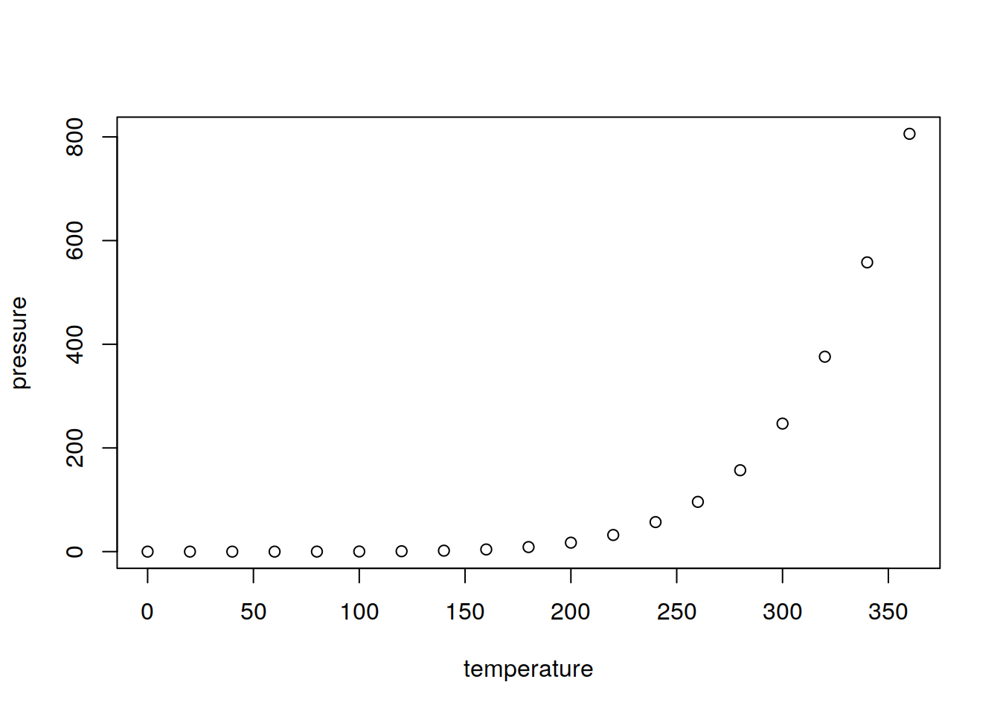

Prefacio
Di3 Doctorado Interinsititucional en Ingeniería Industrial
- Universidad Nacional de Cuyo.
- Universidad Nacional de Misiones (Overá)
- Universidad Nacional de Jujuy
- Universidad Nacional de Salta
- Universidad Nacional de La Rioja
- Universidad Nacional de Tucuman

Flyer
1 Prerequisitos para el curso
Para realizar este curso debes tener más pasión que vocación. Este curso está pensado para interesados en el doctorado en ingeniería industrial Di3
No necesitas saber programar, repito NO NECESITAS !!!

Esto es programar
Pero si has hecho esto que aparece en la figura alguna vez en tu vida, no te preocupes ... Has programado sin saber que esto tan simple es programar !!!
Lo realmente complicado es que vas ha tener que instalar algo de sofrware libre y tener algo de espacio en el disco para manejar datasets un poco aparatodos. Creo realmente que este es un requisito más complicado que el de saber programar.
Utilizaremos a lo largo del curso el lenguaje R-Cran. Pero como es un tanto árido para escribir nos valdremos de otro pargrama (del tipo que se denomina IDE) llamado R-Studio. R-Studio es un Integratede Development Envirnment o Entorno de Desarrollo Integrado que facilita mucho jugar con los datos.
La secuencia de instalación es :
1 - Instalar R-Cran que puedes bajar de https://cran.r-project.org/
2 - Instalar luego R-Studio que puedes bajar https://rstudio.com/products/rstudio/download/
Elije la versión gratuita , a menos que te estén sobrando los dólares y quieras pagar una liencia que no es muy cara.
Por favor sigue el oden de isntalación que indicamos.
Existe un paquete para usar R-Cran desde Excel
(Aka usar comando de R dentro de Excel, pero hablaremos de esto en clase).Primero, debes importar tus datos hacia R. Típicamente, esto implica tomar datos que están guardados en un archivo, base de datos o API y cargarlos como data frame en R. Si no puedes llevar tus datos a R, no puedes hacer ciencia de datos con él.
Una vez que has importado los datos, es una buena idea ordenarlos. Ordenar los datos significa guardarlos de una manera consistente que haga coincidir la semántica del set de datos con la manera en que está guardado. En definitiva, cuando tus datos están ordenados, cada columna es una variable y cada fila una observación. Tener datos ordenados es importante porque si su estructura es consistente, puedes enfocar tus esfuerzos en las preguntas sobre los datos y no en luchar para que estos tengan la forma necesaria para diferentes funciones.
Cuando tus datos están ordenados, un primer paso suele ser transformarlos. La transformación implica reducir las observaciones a aquellas que sean de interés (como todas las personas de una ciudad o todos los datos del último año), crear nuevas variables que sean funciones de variables ya existentes (como calcular la rapidez a partir de la velocidad y el tiempo) y calcular una serie de estadísticos de resumen (como recuentos y medias). Juntos, a ordenar y transformar, se les llama manejar o domar los datos, porque hacer que estos tengan la forma con la que es natural trabajarlos, suele sentirse como una lucha.
Una vez que tienes los datos ordenados con las variables que necesitas, hay dos principales fuentes generadoras de conocimiento: la visualización y el modelado. Ambas tienen fortalezas y debilidades complementarias, por lo que cualquier análisis real iterará entre ellas varias veces.
La visualización es una actividad humana fundamental. Una buena visualización te mostrará cosas que no esperabas o hará surgir nuevas preguntas acerca de los datos. También puede darte pistas acerca de si estás haciendo las preguntas equivocadas o si necesitas recolectar datos diferentes. Las visualizaciones pueden sorprenderte, pero no escalan particularmente bien, ya que requieren ser interpretadas por una persona.
Los modelos son herramientas complementarias a la visualización. Una vez que tus preguntas son lo suficientemente precisas, puedes utilizar un modelo para responderlas. Los modelos son herramientas matemáticas o computacionales, por lo que generalmente escalan bien. Incluso cuando no lo hacen, resulta más económico comprar más computadores que comprar más cerebros. Sin embargo, cada modelo tiene supuestos y, debido a su propia naturaleza, un modelo no puede cuestionar sus propios supuestos. Esto significa que un modelo, por definición, no puede sorprenderte.
El último paso de la ciencia de datos es la comunicación, una parte crítica de cualquier proyecto de análisis de datos. No importa qué tan bien tus modelos y visualizaciones te hayan permitido entender tus datos, a menos que también puedas comunicar esos resultados a otras personas.
Alrededor de todas estas herramientas se encuentra la programación. La programación es una herramienta transversal que usarás en todas las partes de tu proyecto. No necesitas ser una personas experta en programación para hacer ciencia de datos, pero aprender más sobre ella es una gran ventaja porque te permite automatizar tareas recurrentes y resolver problemas con mayor facilidad.
En cualquier proyecto de ciencia de datos tendrás que ocupar estas herramientas, pero en muchos casos estas no serán suficientes. Hay un regla aproximada de 80-20 en juego: puedes enfrentar alrededor del 80 % de cualquier proyecto usando las herramientas que aprenderás en este curso, pero necesitarás utilizar otras para abordar el 20 % restante. A lo largo del curso te iremos señalando recursos donde puedes aprender más.
1.1 Primer referencia biblográfica que puede ayudarte.
La ciencia avanza por que se comunica
1.1.1 R para Ciencia de Datos
Garrett Grolemund Hadley Wickham

R for Data Science
Este es el Libro Web de la versión en español de “R for Data Science”, de Hadley Wickham y Garrett Grolemund. Este texto te enseñará cómo hacer ciencia de datos con R: aprenderás a importar datos, llevarlos a la estructura más conveniente, transformarlos, visualizarlos y modelarlos. Así podrás poner en pŕactica las habilidades necesarias para hacer ciencia de datos. Tal como los químicos aprenden a limpiar tubos de ensayo y ordenar un laboratorio, aprenderás a limpiar datos y crear gráficos— junto a muchas otras habilidades que permiten que la ciencia de datos tenga lugar. En este libro encontrarás las mejores prácticas para desarrollar dichas tareas usando R. También aprenderás a usar la gramática de gráficos, programación letrada e investigación reproducible para ahorrar tiempo. Además, aprenderás a manejar recursos cognitivos para facilitar el hacer descubrimientos al momento de manipular, visualizar y explorar datos.
Link al libro web https://es.r4ds.hadley.nz/index.html
Citas correctamente realizada [@wickham2018r]
Todos los trabajos de evaluación que desarrollaremos serán realizados utilizando la misma tecnología de publicación que se ha utilizado en este libro.
2 Introduction
This chapter is an overview of the methods that we propose to solve an important problem.
3 Analítica de Datos
Acceso al aula virtual para hacer los trabajos prácticos de este Encuentro
3.1 Teoría
3.1.1 Bases de la analítica de datos
Habitualmente en el terreno de las ingenierías, especialmente en las ingenierías generalistas, como la mecatrónica y la industrial, hay una serie de pasos que guían el paso de un profesional junior a senior. Este paso intermedio al que nos referimos es el de un profesional que pasa de las estapas operativas o de planeamiento táctico al de una persona con mucha experiencia es ese terreno que se transforma de supervisor de un área limitada a ANALISTA.
La principal característica de este profesional es que ha logrado, merced a su experiencia en varios proyectos o años de planeación y supervisión el talento para lograr una abstracción que le permitiría en teoría saltar del campo disciplinar en el que se formó para instalarse en otro distinto y ser exitoso sin pasar por la experimentación y experiencia.
Hemos conocido a muchos ingenieros y profesionales del terreno industrial que, por ejemplo tuvieron unos 5 a 10 años en el área del retail o del supermrecadismo en Argentina y saltaron a ser analistas en el terreno de la industria automotriz en Brasil. ¿Cómo es esto posible?
La respuesta más simple para entender esta situación es que se trata de procesos (o fenómenos) homólogos. Vale decir los modelos y eurísticas del retail en la preparación de pedidos y forecasting son los mismos que rigen el planeamiento de la producción de una línea automotríz.
Pensemos, con la ley de Ohm es casi natural para los ingenieros explicar fenómenos sociales o el mismo calentamiento global.
Un analista es capaz de observar un comportamiento e intuir en determinadas circunstancias tal o cual modelo no es aplicable a una situación coyuntural.
A modo de ejemplo casi ningún analista en la cadena de suministros aplicaría en situación de pandemia el modelo de Wilson para determinar el nivel de inventario o el tamaño de lote.
Existen analistas “intuitivos” que saben capitalizar sus experiencias previas, pero este tiempo de los artesanos paa el análisis cada día se torna menos creible y los verdaderamente exitosos han cambiado el instinto por marcos teóricos formales. En tal sentido la inteligencia artificial ha salido en ayuda del analista y como ella otros marcos formales han conformado este campo disciplinar emergente que es el que llamamos analítica de datos.
Existen al menos tres profesionales que integran los equipos del team de la analítica de datos.
- Data Engineer
- Data Scientific
- Data worker o seeker
- Pure Data Analyst
- Draftsman
Todos son importantes en un equipo, pero ninguno es imprescindible. En el sector PyME de LAC (Latino América y Caribe) no es extraño que estos equipos se reduzcan a límite de ser equipos de una sola persona, que además comercializan, compran materia prima, atienden los conflictos familiares de los dueños de la empresa, pagan sueldos e impuestos y barren. Todo sea por mantener la empresa en funcionamiento. Me olvidaba , si queda tiempo hacen de advisor con la analítica de datos.
La Analítica de Datos (Data Analysis, o DA) es la ciencia que examina datos en bruto con el propósito de sacar conclusiones sobre la información. El análisis de datos es usado en varias industrias para permitir que las compañías y las organizaciones tomen mejores decisiones empresariales y también es usado en las ciencias para verificar o reprobar modelos o teorías existentes. El análisis de datos se distingue de la extracción de datos por su alcance, su propósito y su enfoque sobre el análisis. Los extractores de datos clasifican inmensos conjuntos de datos usando software sofisticado para identificar patrones no descubiertos y establecer relaciones escondidas. El análisis de datos se centra en la inferencia, el proceso de derivar una conclusión basándose solamente en lo que conoce el investigador y fuertemente soportado por la estadística.
4 Revisión de las herramientas de software y hardware disponibles
4.1 Software para celulares
Es claro que el territorio que antes ocupaba la PC es cada día más invadido por el teléfono celular. Por este motivo es necesario tnener en cuenta que dentro de las herramientas disponibles existen programas o software para PC, apps para el celular y elementos mixtos, tales como la aplicaciones en la nube. De modo que al encarar el tema de analítica de datos este hecho relativo al hardware debe ser tenido en cuenta y no limitarse a una preconcepción.
Por otro lado en el entorno indutrial cada vez son más los dispositivos (electrodomésticos) que vienen concebidos con internet de las cosas -IOT- por sus siglas en inglés . En le mundo de la industria esto también ocurre con equipo dotados de lo que se denomina internet de las cosas industriales -IIOT-.
Aplicaciones Android
Esto es lo que hoy aparece como aplicaciones disponibles para el sistema android . En este caso hemos utilizado aplicaciones que pueden ayudar mucho en la elaboración del trabajo de evaluación, pero tienen un aporta mayor para elaborar una tesis doctoral.
De todos modos es altamente recomendable que indagues y experimentes con ellas. Tanto las herramientas de gestión bibliometrica como las de gestión y revisión de patentes están entre las aplicaiones más usadas en el campo de la analítica de datos industriales.
4.2 Herramientas para PC
4.2.1 Análisis Bibliométrico
Sea cual fuere el entorno o problema industrial que motiva en trabajo de la analítica que se pretende desarrollar hay dos factores clave que deben ser tenidos en cuenta. El primero está referido a las redes de personas. Hace unos 20 años atrás era muy común la ealboración de almanaques o enciclopedias que señalavan lo que se denominaba who is who en determinado campo industrial o de investigación.
El segundo era descibrir como los trabajos y pdoducidos de la investigación ligaban territorialmente a estas, persona. Este segundo punto además permite con la ayuda de servicios orientados de internet obtener una perspectova golbal de la especialización por país y actividad.
 Pero mucho de este material sustituido por las herramientas bibliométricas que aún reinan en el terreno de la PC pero cada día se mueven a la nube o al celular.
Pero mucho de este material sustituido por las herramientas bibliométricas que aún reinan en el terreno de la PC pero cada día se mueven a la nube o al celular.
Estas herramientas bibliométricas son una de las clavex para comenzar a trabajar en analítica de datos, pero también para elaborar una parte central del primer capítulo de cualquier tesis denominada Estado del Arte.
- Georeferenciación y exploración georeferenciada de datos y bibliometría
- Modelos basados en redes neuronales y su entrenamiento
- Crítica de la KDNN con el uso de Big-Data
4.3 Tecnologías
- Soluciones propuesta con el uso de CUDA (uso de GPU en lugar de CPU)
- Uso de la biblioteca Neuralnet y NeuralNetTools.
- Uso de las bibliotecas Serial Time Análisis y Finance Econometics, diferencias entre las predicciones de ambas tecnologías
4.4 Casos de estudio para el aula virtual
Caso de Estudio – El éxitoso caso de la industria del vino en Nueva Zelanda durante la pandemia Caso de Estudio – El INV y el sector vitivinícola de Mendoza, hacia una nueva explosión del consumo de vinos de alta gama como consecuencia de la cuarentena.
You can label chapter and section titles using {#label} after them, e.g., we can reference Chapter @ref(intro). If you do not manually label them, there will be automatic labels anyway, e.g., Chapter @ref(methods).
Figures and tables with captions will be placed in figure and table environments, respectively.
par(mar = c(4, 4, .1, .1))
plot(pressure, type = 'b', pch = 19)(#fig:nice-fig)Here is a nice figure!
Reference a figure by its code chunk label with the fig: prefix, e.g., see Figure @ref(fig:nice-fig). Similarly, you can reference tables generated from knitr::kable(), e.g., see Table @ref(tab:nice-tab).
knitr::kable(
head(iris, 20), caption = 'Here is a nice table!',
booktabs = TRUE
)| Sepal.Length | Sepal.Width | Petal.Length | Petal.Width | Species |
|---|---|---|---|---|
| 5.1 | 3.5 | 1.4 | 0.2 | setosa |
| 4.9 | 3.0 | 1.4 | 0.2 | setosa |
| 4.7 | 3.2 | 1.3 | 0.2 | setosa |
| 4.6 | 3.1 | 1.5 | 0.2 | setosa |
| 5.0 | 3.6 | 1.4 | 0.2 | setosa |
| 5.4 | 3.9 | 1.7 | 0.4 | setosa |
| 4.6 | 3.4 | 1.4 | 0.3 | setosa |
| 5.0 | 3.4 | 1.5 | 0.2 | setosa |
| 4.4 | 2.9 | 1.4 | 0.2 | setosa |
| 4.9 | 3.1 | 1.5 | 0.1 | setosa |
| 5.4 | 3.7 | 1.5 | 0.2 | setosa |
| 4.8 | 3.4 | 1.6 | 0.2 | setosa |
| 4.8 | 3.0 | 1.4 | 0.1 | setosa |
| 4.3 | 3.0 | 1.1 | 0.1 | setosa |
| 5.8 | 4.0 | 1.2 | 0.2 | setosa |
| 5.7 | 4.4 | 1.5 | 0.4 | setosa |
| 5.4 | 3.9 | 1.3 | 0.4 | setosa |
| 5.1 | 3.5 | 1.4 | 0.3 | setosa |
| 5.7 | 3.8 | 1.7 | 0.3 | setosa |
| 5.1 | 3.8 | 1.5 | 0.3 | setosa |
You can write citations, too. For example, we are using the bookdown package [@R-bookdown] in this sample book, which was built on top of R Markdown and knitr [@xie2015].
5 Literature
Here is a review of existing methods.
6 Bibliografía
Estas referencias bibliográfica serán de utilidad en el curso
7 Methods
We describe our methods in this chapter.
8 Métodos
Métodos Utilizados en los trabajos
9 Aplicaciones
Casos de estudios
9.1 El caso de Nuevazelanda de la industria del vino
9.2 ¿Que hace el INV en Argentina
10 Applications
Some significant applications are demonstrated in this chapter.
10.1 Example one
10.2 Example two
11 Final Words
We have finished a nice book.
12 Datasets
Set de Datos y Métodos de Depuración
Referencias
Datasets
13 Datasets utilizados en el curso
El siguiente es un listado de los datasets que utilizaremos en el curso y eventualmente otros que los doctorandos propongan.
En la medida de sus posibilidades les pedimos que nos hagan llevar un link de acceso al dataset junto a un resumen de los datos y características.
13.1 WASH
Urban Water and Sanitation Survey Dataset Ernest Guevarra 2020-09-29
Este dataset puede ser accedido directamente desde R-Cran invocando la instalación del paquete wash
install.packages("washdata")## Installing package into '/home/rpalma/R/x86_64-pc-linux-gnu-library/3.4'
## (as 'lib' is unspecified)El dataset aborda el probelma de la producción de agua y el tratamiento de los efluentes en el hemisferio sur.
https://cran.r-project.org/web/packages/washdata/vignettes/washdata.html
13.2 Impactos de la aglomeración industrial en la eficiencia ecológica y polución
Un análisis econométrico basado en un dataset de 259 ciudades chinas.
13.3 Implementación de algoritmo K-Means para dispositivos eterogeneos (cpu/gpu)
Caso de estudio basado en un dataset industrial.
13.4 (Infrastructure) Global Wine Statistics Trained Neural Net
Autores Ricardo R. Palma Fecha de publicación 2020/2/11 Origen https://data.mendeley.com/datasets/k5sn5ydbmc/1 DOI: 10.17632/k5sn5ydbmc.1 Número de informe 22855
13.5 Aerocargo Trafic Argentina - from 2014 to 2019 (no covid-19 data included)
Critical Infrastructure Risk Research Program PALMA, Ricardo Raúl; MASERA, Gustavo A.
Proyectos Bianuales de Investigación Universidad Nacional de Cuyo
DOI: 10.5281/zenodo.4025491
Propuestas metodológicas y modelos de concepción, operación y gestión para la reducción de vulnerabilidad e incremento de la resiliencia en la nueva generación de infaestructuras crítica de américa latina. Código Sigeva: B083 Resolución Nro.: Otorgamiento: RES 4142/2019-R- Expediente : NOTA- CUY:38892/2019
https://zenodo.org/record/4025491#.X30VuHb0nJ4
Total de Vuelos Registrado con aeropuerto de partida y llegada. Existen menos del 2% de aeronaves que no emitieron su baliza ADSB que no fue captada por SDR. Despegaron y Aterrizaron en Locaciones no registradas como pistas habilitadas.
13.6 Energy Statistical Yearbook 2018 - Statistics
Compilado por R. Palma Estadística mundial de eficiencia e intensidad energética
13.7 Herederos
Datos de caso de estudio de empresas familiares que cambian la gerencia por jubilación de los fundadores.
Es un caso de estudio redactado por R. Palma & G. Masera sobre el impacto de la innovación en el futuro de las PyMEs Argentinas
13.8 Índice de Innovación Potencial
Caso de estudio y paper publicado por R. Palma (Universidad Nacional de Cuyo), Mauricio Camargo (Universidad de Lorenia) sobre investigación del índice de innovación potencial y su impacto en el riesgo y rentabilidad de empresas.
https://themys.sid.uncu.edu.ar/rpalma/R-cran/MDZ_Competitividad.csv
13.9 Residuos Agrícolas
Caso real de relevamiejto de mecanismo de financiamiento de iniciativas para mitigar (reducir) el impacto de agroquímicos y eutrofizantes.
https://themys.sid.uncu.edu.ar/rpalma/R-cran/Residuos_Agricolas.csv
13.10 Comparación de la competitividad de Bodegas Vitícolas de Mendoza
https://themys.sid.uncu.edu.ar/rpalma/R-cran/bodegas_productividad.Rda
13.11 World Compliance Association
Relevamiento del comportamieto financiero de casos de empresas Argentinas que se involucraron concluyeron en Corrupción
Dimensiones: TIR = Rentabilidad anual VAN = Facturación Neta en Millones de U$D Asset = Inversión en Fijo Activos Ivent = Activos de trabajo más Inventario Type = Categórica Co(Corrupción) , Pi (Política de Integridad) , Da (Daño Colateral a 3ros.)
13.12 Empresas innovadoras
Mapa de empresas con IIP superior a Q3
13.13 Uso de Energías Alternativas
Dataset utilizado en el libro "Modelos y Escenarios Energéticos Para la Economía de Transición"
El dataset releva el uso de fuentes de energía en una localidad cordillerana en la que se pretende implementar smart grid.
13.14 R Markdown
This is an R Markdown document. Markdown is a simple formatting syntax for authoring HTML, PDF, and MS Word documents. For more details on using R Markdown see http://rmarkdown.rstudio.com.
When you click the Knit button a document will be generated that includes both content as well as the output of any embedded R code chunks within the document. You can embed an R code chunk like this:
summary(cars)## speed dist
## Min. : 4.0 Min. : 2.00
## 1st Qu.:12.0 1st Qu.: 26.00
## Median :15.0 Median : 36.00
## Mean :15.4 Mean : 42.98
## 3rd Qu.:19.0 3rd Qu.: 56.00
## Max. :25.0 Max. :120.0013.15 Including Plots
You can also embed plots, for example:

Note that the echo = FALSE parameter was added to the code chunk to prevent printing of the R code that generated the plot.